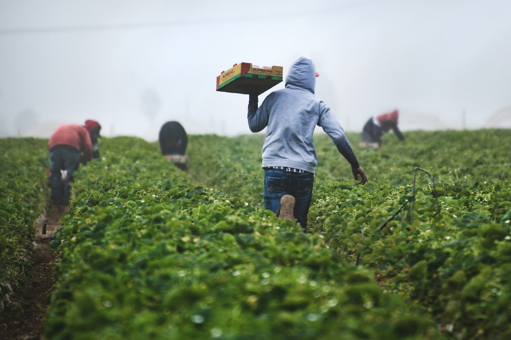
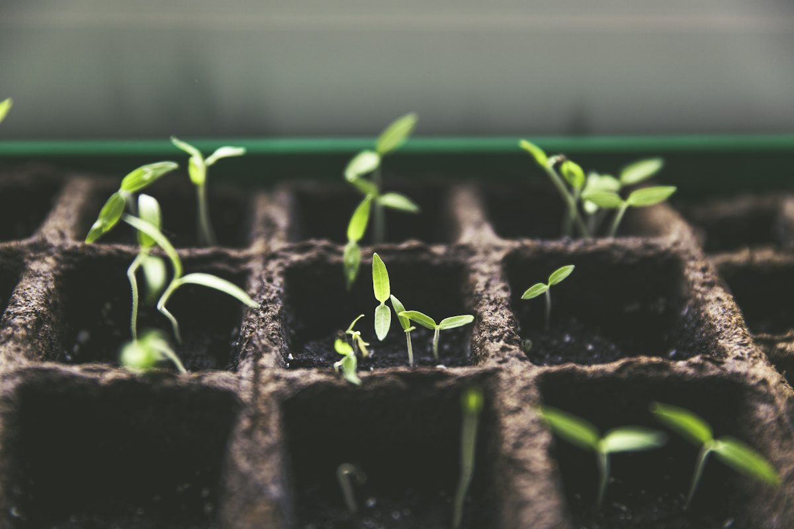

Services — advice + delivery, not just bags

🌱 Free crop advisory
Basal + top-dress per acre for wheat, mustard, gram, bajra, maize, vegetables. Hindi/Hinglish. Bring your Soil Health Card.

🧪 Soil-test guidance
Where/how to test in Sirohi, how to read pH/OC/N-P-K, dose adjustment basics. Lab test itself via govt/KVK channel.
🚜 Bulk & B2B + delivery
Tractor-trolley lots, dairy/institution supply, GST bill, farm drop in Abu Road belt. Quote in 2 hours on working days.
Abu Road crop calendar (lead magnet)
| Month | Field work | Fertilizer window |
|---|---|---|
| Jun–Jul | Kharif sowing: bajra, maize, moong | Basal DAP/NPK |
| Aug–Sep | Weeding + pest watch | Top-dress urea if rain gaps allow |
| Oct–Nov | Rabi sowing: mustard, wheat, gram | Basal DAP/NPK + sulphur |
| Dec–Jan | Irrigation + tillering | Urea splits + zinc spray |
| Feb–Mar | Grain filling, harvest prep | Potash focus, stop excess N |
Want this as a printable 1-pager on WhatsApp? Message CALENDAR → — free, no spam, only sowing reminders.
Contact: +91 79786 01417 · tripathychinmayee1@gmail.com